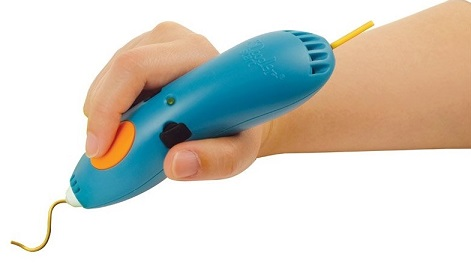

Stylo 3D: 3Doodler Start¶
Matériel¶
Logiciels¶
Utilisation¶
Note
Il faut compter 2h à 2h 30 pour recharger le 3doodler Start.
Attention
Ne fonctionne pas avec le filament d’imprimantes 3D car la température du 3Doodler n’est pas assez élevé pour le faire fondre.
Attention
Le plastique se consomme très rapidement et est onéreux. Il sera important de ne donner l’appareil qu’après avoir expliqué son fonctionnement et de surveiller son utilisation.
Recharge: orange clignotant Fini recharger: orange (quand branché)
Sur On: rouge = en train de chauffer Puis vert: prêt
Appuyer une fois bouton orange: pousser le plastique Deux fois: retirer le plastique
Important
TODO: chercher technique pour récupérer le plastique
Note
Dessiner les formes à plat pour ensuite les accrocher entre elles en volume en faisant des fixation autour.